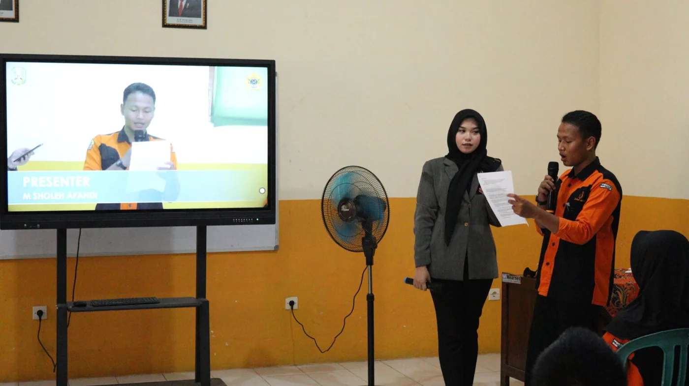

1Komputer & InformatikaDesain Komunikasi Visual
Program keahlian DKV membentuk kreator visual yang menguasai seni rupa, desain grafis, fotografi, videografi, dan animasi. Gedung SMK Pusat Keunggulan DKV diresmikan 2024, didukung guru tamu JTV Jember, Jatim Times, serta magang industri di PT Indo Bismar dan percetakan Mulya Citra Grafika.